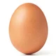
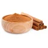
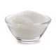
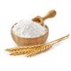

| imagens | Ingredientes: | Quantidade: |
|---|---|---|
 |
ovos | 2 |
 |
Leite | 1 xícara (chá) |
 |
fermento em pó | 1 colher (sopa) |
 |
canela para polvilhar | 1 colher (sopa) |
 |
Açucar | 1 xícara (chá) |
 |
farinha de trigo | 2 e 1/2 xícaras |
 |
açúcar para polvilhar | 3 colheres (sopa) |